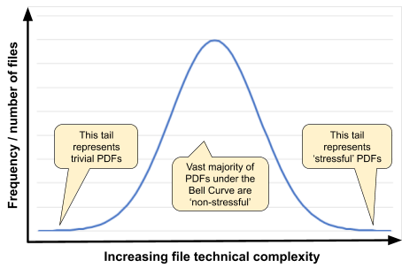

Interoperability is the core value proposition of the PDF file format. Although interoperability comes from sharing a clear and precise understanding of the file format specification, test data in the form of a corpus of PDF files is critical to ensuring reliable and robust implementations especially in the more complex areas of the specification.
Larger and established organizations that have spent years developing PDF technologies typically maintain their own private corpus of confidential PDF files collated over the years from their user base and market experience. We have also all seen bug reports in open-source developments where triggering data cannot be shared due to customer confidentiality or privacy concerns, leaving developers struggling to reproduce and resolve reported issues.
The uses to which corpora are put are so varied that it’s impossible to say which is the “best”. Let’s review a few cases:
In the interconnected digital world it is critically important that all PDF processors are reliable and robust against all forms of unexpected inputs. Whether the input is technically valid PDF according to some past (or future!) version of the PDF specification, whether it is accidentally malformed through data corruption or undesirable pre-processing, or whether it is intentionally and maliciously malformed, stressful PDF files can be of great assistance to all PDF developers in improving their technologies.
Although fuzzing techniques and tools have advanced rapidly in recent years, very large computing resources, specialized expertise to create grammar-aware fuzzing, deep expertise in the PDF file format, and a lot of time and patience are all required to get good results (and good ROI) from a fuzzing initiative. So can there be a better way?
To answer this question, we should first back up and examine what makes non-stressful PDF files. Although not a technical definition, many developers consider non-stressful PDF as commonplace files using typical lexical and syntactic constructs, with idioms that don’t take any parser by surprise.
Many expect that a random internet search for PDF files will find all the “typical” files they need.
Is it correct to assume that internet searching returns a ‘normal distribution’ (bell curve) of PDF files with varying internal file complexity ranging from the trivially simple to the extremely stressful? Based on sheer volume alone, at some level the answer might be “yes”, but this assumption is also derived from a number of other more basic assumptions that can be partially examined in more detail:

In the same way that data scientists working in Machine Learning and AI concern themselves with bias in their data, and its impact on their algorithms, those collecting files for corpora need to be aware of accidental bias that may be introduced through their collection methods and tooling.
First, one must acknowledge that files found on the internet don’t represent all files that exist; far from it. Many factors, including pay-walls, database- and script-generated PDF files, access restrictions, and various other technical and legal impediments limit what search engines can access and index. Clearly, no one opens up their entire personal or business cloud-based services and file shares to internet search engines so, not unexpectedly, entire classes of PDF documents will also be under-represented in search engine results, including bank statements, health records, financial and tax records, various legal documents, proprietary engineering and manufacturing specifications, very large files, files containing executable content, malicious files, etc. When combined with stale and broken links, using a search engine to locate and download sufficient random PDF files to create that bell curve and that results in a reasonably sized corpus of “stressful PDF” at the very tail of the bell curve is possible, but highly inefficient and costly. Such data is also unstructured and unlabeled so knowing which file falls at which position along the X-axis is even more work.
For those willing to accept those limitations, there is an efficient way to access large amounts of data from the web via publicly available datasets gathered by Common Crawl. Common Crawl’s mission is to “...maintain an open repository of web crawl data that can be accessed and analyzed by anyone.” (see http://commoncrawl.org/). It is the database that lies behind the Wayback Machine (https://web.archive.org/) containing petabytes of data collected since 2008. Common Crawl includes crawl metadata, raw web page data, extracted metadata, text extractions, and, of course, millions and millions of PDF files. Its datasets are huge; the indices are themselves impressively large – the compressed index for the December 2019 crawl alone requires 300 GB. So can Common Crawl’s data be considered as a pre-packaged internet search, ready for use?
"Building a Wide Reach Corpus for Secure Parser Development" by Allison et. al. (http://spw20.langsec.org/papers.html) is a recent research report from NASA’s Jet Propulsion Laboratory (JPL) developed under the SafeDocs program. The authors investigated PDF files in the public Common Crawl corpus, and identified a number of concerns:
| Search Engine | Condition | Number of Files |
| site:jpl.nasa.gov | 1.2 million | |
| Bing | site:jpl.nasa.gov | 1.8 million |
| Common Crawl | *.jpl.nasa.gov | 128,406 |
| site:jpl.nasa.gov filetype:pdf | 50,700 | |
| Bing | site:jpl.nasa.gov filetype:pdf | 64,300 |
| Common Crawl | *.jpl.nasa.gov filetype:pdf | 7 |
TABLE II
NUMBER OF PAGES BY SEARCH ENGINE AND FILE TYPE FOR
‘JPL.NASA.GOV’
These key findings highlight that although Common Crawl and internet search engines can be extremely useful for quickly and easily gathering very large quantities of files, they cannot be relied upon for a complete crawl of the web nor of specific sites. This implies that a corpus developed solely via such means may not be fully representative of file diversity. Much like the data scientists and ML/AI, appreciating these issues (biases) helps us appreciate how Common Crawl data and internet searches can be included in test corpora while also acknowledging the limitations.
If a “stressful PDF” can be considered as any file that causes problems for a parser, then looking into the problems faced by diverse parsers can be a great learning experience.
As part of the same SafeDocs research, the NASA JPL team extended their crawling technology to be able to ‘deep crawl’ into a number of publicly accessible common issue tracker (bug) databases (such as Bugzilla, JIRA, and GitHub) to extract file attachments associated with each bug report. A number of well-known open-source PDF processors with publicly accessible bug databases were then ‘deep crawled’ to create a new corpus. Issue tracker file attachments are not visible to search engines as they hide within bug databases, and thus this new corpus creates an extension to the type of data found in Common Crawl or returned by internet search engines. Issue trackers also conveniently capture a time log of bug reports, creating a ‘temporal database’ in much the same way as the time-based Common Crawl datasets.
Any data associated with a bug report is, by its very nature, going to be biased, but this time in a good way for “stressful PDFs”! Bug report file attachments tend to be unusual, or at least the cause of something unexpected for the original developer at the time of the bug report. By maintaining a link back to each specific bug report (i.e. the Bug ID) others can examine the originally reported issue, any technical discussions, linked or subsequent issues, and even resulting code changes. This can help accelerate resolution of new issues in other PDF processors when triggered with the same data, or with annotating and labeling data for machine learning data sets.
Initial use of this new “Issue Tracker” PDF corpus within the SafeDocs research program and by the Apache Tika team for regression testing has indicated a much higher “bug yield” than other conventionally-sourced and much larger corpora from internet search engines. This improved ROI is easy to use (reasonably sized), and does not require any specialized knowledge besides a basic understanding of the PDF file format.
This new “Issue Tracker” PDF corpus is now publicly available and can be found at https://corpora.tika.apache.org/base/docs/bug_trackers and at https://corpora.tika.apache.org/base/packaged/pdfs/ with individual ZIP files for each currently available application to simplify downloading. The corpus is currently about 16 GB with over 20,000 PDF files from some well-known open-source PDF processors including Apache PDFBox, Apache Tika, Chromium pdfium, and GhostScript. Each file in the corpus is named with a Bug ID and associated with an open-source parser to allow full traceability.
| Issue Tracker | No. of PDFs | Size | ZIP Size |
| GhostScript | 5,279 | 5.3 GB | 3.8 GB |
| Libre Office | 5,183 | 1.3 GB | 1.0 GB |
| Mozilla pdf.js | 2,400 | 4.9 GB | 4.1 GB |
| OCR-my-PDF | 187 | 437 MB | 384 MB |
| Apache Open Office | 3,109 | 688 MB | 539 MB |
| Open PDF | 31 | 3.2 MB | 2.5 MB |
| Apache PDFBOX | 3,577 | 2.6 GB | 1.7 GB |
| Chromium pdfium | 379 | 212 MB | 167 MB |
| POI | 10 | 908 KB | 684 KB |
| qpdf | 68 | 33 MB | 23 MB |
| Sumatra PDF | 213 | 487 MB | 372 MB |
| Apache TIKA | 140 | 140 MB | 126 MB |
| TOTAL | 20,576 | 16 GB | 13 GB |
We hope to extend this corpus in the future with data from more PDF technologies as well as with new capabilities to ‘deep crawl’ other issue tracker tools. I encourage all PDF developers to try this new “Issue Tracker” PDF corpus against their own technologies and to report their experiences, with a focus on improving reliability and robustness against unexpected input. For more information and to stay up-to-date with the “Issue Tracker” PDF corpus, please join the corpora-dev@tika.apache.org email list (via https://tika.apache.org/mail-lists.html) and, for PDF Association members, please provide your feedback or comments in the PDF TWG.
A new GitHub repository has also been established at https://github.com/pdf-association/pdf-corpora to provide an index of PDF-centric corpora that may be of interest to the wider PDF developer community. This includes a broader scope and size of corpora, ranging from those focused on PDF ISO subsets (such as PDF/X and PDF/A) as well as more content-centric corpora (such as those used for table recognition hackathons). If you are aware of other corpora, or would like to offer your corpora to the wider PDF industry, please create a new Issue or pull request in GitHub.
To hear more about this new “Issue Tracker” PDF corpus and other SafeDocs contributions to industry, please register for my OctoberPDFest SafeDocs update webinar!
The PDF Association wishes to thank the NASA JPL and Apache Tika teams, and particularly Dr. Tim Allison, for their efforts in creating the technology and collating the data. We also wish to thank Maruan Sahyoun of PDF Association member FileAffairs GmbH, part of the Apache PDFBox team, for hosting the “Issue Tracker” PDF corpus as a valuable new industry resource.
This material is based upon work supported by the Defense Advanced Research Projects Agency (DARPA) under Contract No. HR001119C0079. Any opinions, findings and conclusions or recommendations expressed in this material are those of the author(s) and do not necessarily reflect the views of the Defense Advanced Research Projects Agency (DARPA). Approved for public release.
Peter Wyatt is the PDF Association’s CTO and an independent technology consultant with deep file format and parsing expertise, who is a developer and researcher actively working on PDF technologies for more than 20 years. He is Project co-Leader of ISO 32000 (the core PDF standard), co-Chairs the PDF Association PDF TWG and is the PDF Association’s Principal Scientist leading …
Peter Wyatt is the PDF Association’s CTO and an independent technology consultant with deep file format and parsing expertise, who …